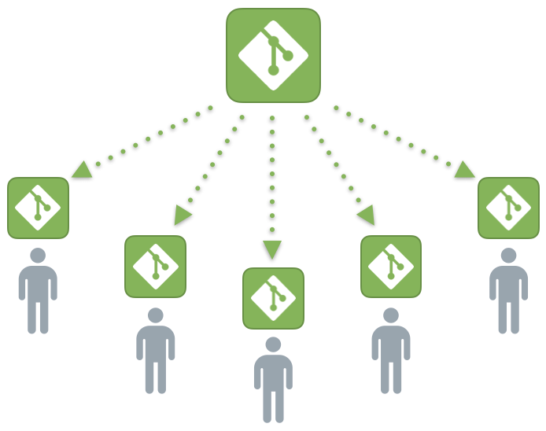

Aprendendo Sobre o Git¶
Inicialmente, quando não tinhamos Softwares de Versionamento, diversos programadores utilizavam suas IDEs (ou na pior das situações, Notepads) para desenvolver suas partes do projeto e, ao final dele, juntavam todos os arquivos visando obter um resultado para o projeto. Com o desenvolvimento dos Softwares de Versionamento, tal como o Git (uma das mais recentes com Fluxo de Trabalho Distribuido), o trabalho dos projetistas tornaram-se menos laborioso. Sendo assim, vamos conhecer mais um pouco esse software chamado Git.¶

O que é o Git?¶
O Git é um Software de Controle de Versão onde os programadores trabalham sempre em um mesmo Servidor Central, cada um controlando suas tarefas remotamente por Sub-Servidores, fazendo todas alterações possíveis em um projeto, como gravar documentação e comentários. o Git guardará tudo que o programador fizer, todas as vezes que alguma alteração ou adição for feita a um projeto e salva no Git, ele registrará tais alterações.
Software de Controle de Versão: Um sistema de versionamento, também chamada de controle de versões, VCS (Version Control System) ou SCM (Source Code Management) é um software de gerenciamento de diferentes versões de um arquivo qualquer, esse que constitui uma função chave para um projeto. Esse recurso é amplamente utilizado no desenvolvimento de softwares para controlar as diferentes versões da parte de programação e de documentação.
Vale salientar, que o Git tem algumas vantagens para quem a escolhe como método para versionar o seu projeto. São elas:
- Criação de áreas separadas para testes ou projetos diferentes, ou técnicamente chamadas de "branches".
- Desfazer alterações problemáticas, voltando para a versão estável, um conceito denominado de "reset".
- Trabalhar em equipe de forma mais simples e com mais segurança, em que cada um faz de sua máquina (repositório local) um Sub-Servidor, para ao final de uma versão enviar ao servidor central, comumente conhecida como GitHub, a rede social Open Source dos programadores.
Usar um Software de Versionamento quando se está em um projeto com inúmeras pessoas é uma atitude fundamental. Quando pensamos no quesito organização, devemos pensar também na metodologia responsável por garantir tal quesito, e ter em mãos um software desses permite que os projetistas consigam ter controle sobre todas as versões de um projeto de forma clara e limpa, podendo voltar para versões anteriores no momento em que for necessário.

Quando se está organizando um projeto, é inerente que o mesmo passe por inúmeras versões até chegar em sua versão final. Um exemplo rotineiro no nosso dia a dia, são os inúmeros Sistemas Operacionais que usamos, em que constumeiramente são submetidos a novas versões e, se pensarmos na equipe de desenvolvedores para esse sistema, dificilmente eles lançam alguma atualização sem ter cometido nenhum erro antes de testá-los. Como ajuda, os Softwares de Versionamento permitem retroceder até a parte em que o código estava integro, garantindo uma nova bifurcação no software de forma segura.
Como o foco desse curso é o GitHub, vamos sempre usar o GitHub Desktop, em que o Git funcionará em segundo plano, trazendo mais facilidades para quem estiver usando. Entretanto, há inúmeros outros softwares disponíveis, dado que o primeiro software de versionamento surgiu em 1972 (adiante veja uma lista de softwares de versionamento que também são interessantes).
O Git trabalha com um sistema de versionamento aplicado ao Fluxo de Trabalho Distribuido ou Distributed Version Control System, cuja ideia é ter um Servidor Central, como o GitHub, e diversos Sub-Sevidores, para cada um dos membros que estiverem trabalhando no projeto. Quando um projetista termina o seu trabalho em uma determinada versão, ele registra as alterações no seu sub-servidor, de modo que em uma provável situação de Depuração do Código, o Git saiba identificar os exatos pontos que foram alterados e, sabiamente, alterar na versão registrada no sub-servidor do projetista, mantendo ainda todas as versões passadas salvas por motivos de segurança. Assim, é possível realizar o resgate dessas versões anteriores sempre que for necessário, como uma verdadeira máquina do tempo. Por fim, quando se há certeza do trabalho realizado, todos os registros dos sub-servidores são encaminhados ao servidor central (GitHub).
Nos softwares de versionamento passados, eram considerados um Fluxo de Trabalho Centralizado ou Centralized Version Control System, em que existe apenas o servidor central e os projetistas registravam suas alterações diretamente nesse servidor. Tal Fluxo Linear é menos seguro que o trabalho distribuido, mas é muito utilizado no mundo corporativo e totalmente inviável para projetos Open Source.

Abaixo veja uma lista com outros softwares de versionamento existentes:
| Fluxo de Trabalho Centralizado | Fluxo de Trabalho Distribuido |
| 1. CA Software Change Manager | 1. Mercurial |
| 2. Source Code Control System | 2. Bazaar |
| 3. Panvalet | 3. Code Co-Op |
| 4. Concurrent Version System | 4. GNU Arch |
| 5. Apache Subversion | 5. Monotone |
| 6. ClearCase | 6. Fossil |
| 7. Visual SourceSafe | 7. BitKeeper |
| 8. Perforce | 8. Git |
Agora vamos conhecer alguns comandos e conceitos que são fundamentais para se trabalhar com Git e GitHub.
| Comando e Conceitos Básicos |
|---|
| Clone: esse comando é responsável por criar um repositório na máquina que você está trabalhando (repositório local ou servidor local), sendo esse repositório uma cópia de outro localizado em um servidor central (que no caso é o GitHub). |
| Branch: é uma vertente do código, trata-se da possibilidade de criar repositórios paralelos ao principal, podendo ser usado em inúmeras finalidades. O repositório principal é chamada de master. |
| Checkout: Esse comando serve para escolher em qual branch vigente no servidor local será trabalhado algum arquivo. |
| Add: Este comando informa ao Git que há arquivos existententes para serem adicionados ao servidor local, mas ainda não o adiciona. |
| Commit: Esse comando versiona (guarda) no servidor local e na branch vigente o arquivo. |
| Revert: Apesar de não ser o comando exato do Git, esse termo se refere ao ato de desfazer algo no servidor local para voltar a alguma versão anterior, exatamente a parte mais atrativa do Git. |
| Pull: esse comando baixa os arquivos do servidor local. |
| Push: esse comando envia tudo que estava no servidor local e na branch vigente para o servidor central. É nesse momento que outras pessoas podem visualizar o seu trabalho pelo GitHub. |
Veja abaixo algumas imagens que ilustram alguns comandos e conceitos básicos explicados acima. Vale a pena salientar que não vamos mostrar esses comandos na prática sendo usados diretamente no Git Bash, pois há formas mais ágeis de se fazer o mesmo trabalho usando o GitHub Desktop, esse que será o principal ambiente de trabalho para fazer a comunicação dos repositório locais com os remotos (muito embora ele utilize o Git em suas operações). Por enquanto, vamos nos segurar em apenas entendar a finalidade de um software de versionamento.
Comando clone, baixando um repositório para a sua área de trabalho.
Comando branch, os "universos paralelos do repositório".
Comando commit, versionando os arquivos no repositório.
Próximos Passos...¶
Na próxima parte do curso, vamos aprender sobre o GitHub e como essa ferramenta pode ser útil para criar um portifólio pessoal.
Está gostando do conteúdo? Compartilhe com seus amigos para que eles possam aprender também! Ajude a tornar a educação gratuita mais plural e democrática.